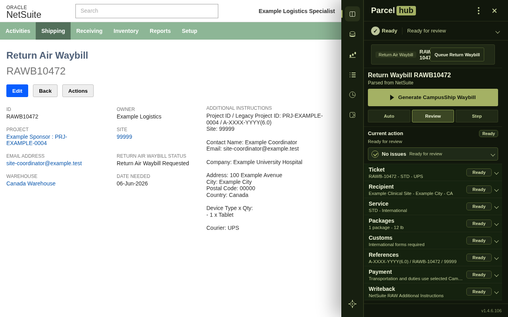
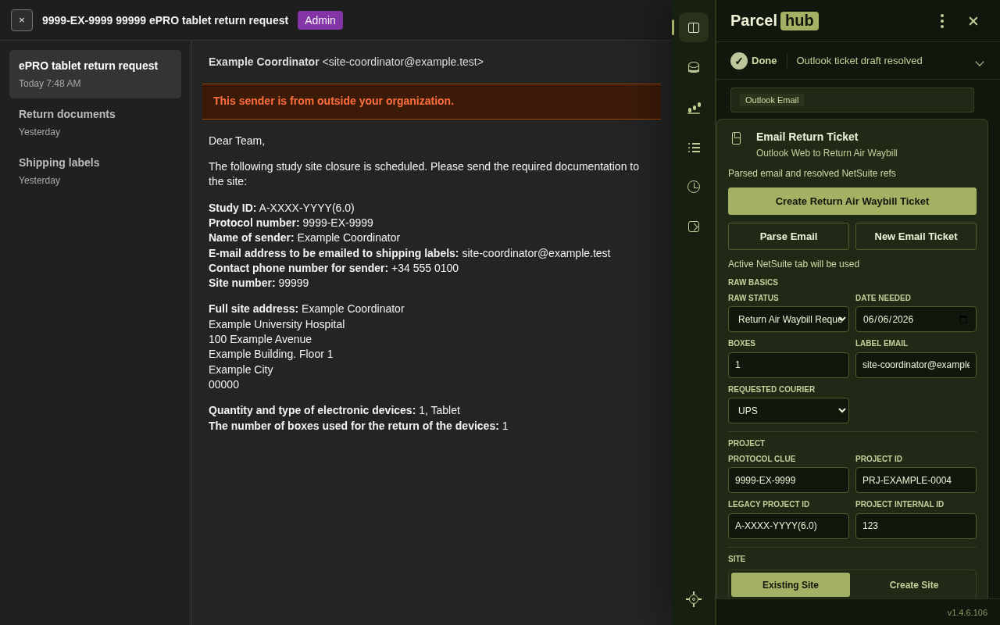
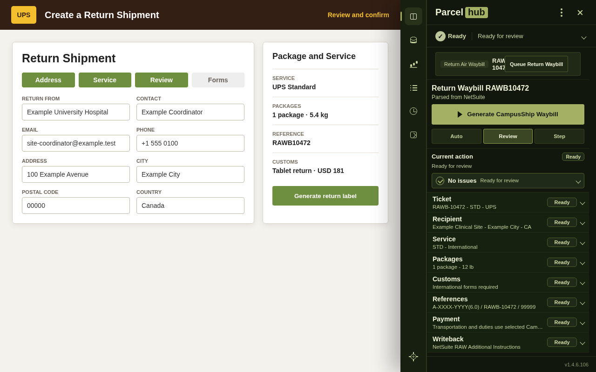

Parse shipment sources
Extracts shipment and return waybill details from supported Parcel Hub pages and Outlook shipping request emails.

Carrier-ready shipment, return waybill, and email parsing workflows for authorized internal shipping teams.
Parcel Hub reads supported source pages and shipping request emails, normalizes shipment details, and keeps queue state connected to carrier handoff and tracking writeback.
Extracts shipment and return waybill details from supported Parcel Hub pages and Outlook shipping request emails.
Guides supported UPS CampusShip, FedEx, and WorldShip workflows using the same shared return routing state.
Tracks queued, in-progress, and writeback-pending jobs so existing tracking results are not lost.


Parcel Hub requires access to configured ticket pages, supported email workflows, internal host services, and carrier systems. Users outside an authorized Parcel Hub environment will not be able to use the extension independently.